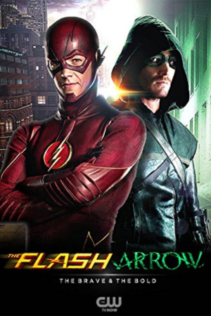

Flash vs. Arqueiro
Flash vs. Arqueiro é o nome do primeiro crossover anual do Arrowverso entre Flash e Arqueiro. Os episódios foram exibidos, nos Estados Unidos nos Ele foi exibido 2 de dezembro e 3 de dezembro de 2014. O primeiro evento crossover anual no Arrowverso, exibido durante a temporada de 2014-2015. A Equipe Flash e Equipe Arqueiro se unem para derrotar o vilão capitão Boomerang e o metahumano Roy Bivolo em suas respectivas cidades.
